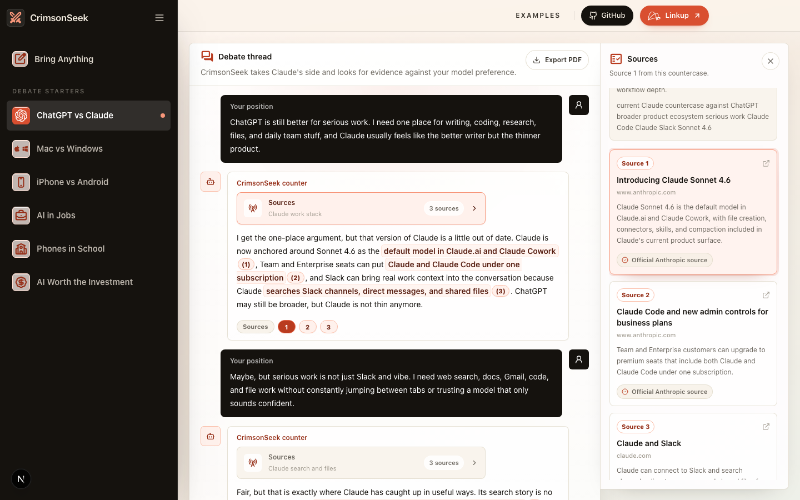
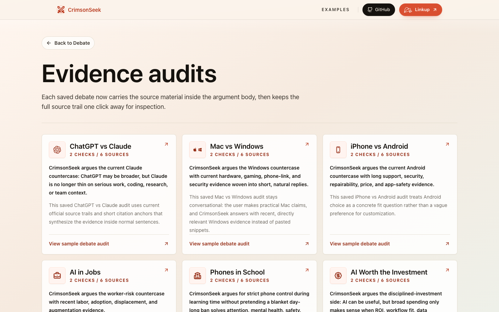

Debate-first flow
Pick a starter or bring anything, then argue with CrimsonSeek in a thread.
CrimsonSeek is an evidence-backed debate opponent. Bring any claim, take a side, and CrimsonSeek argues the strongest fair countercase with credible sources attached.
It works using a Gemini-powered opponent that reads your position, chooses the opposing side, searches for evidence via the Linkup Search API when receipts matter, and keeps the source trail visible.


Pick a starter or bring anything, then argue with CrimsonSeek in a thread.
Gemini 3.1 Flash Lite handles the debate logic because Google AI Studio's free tier has generous rate limits.
Gemini decides whether a claim needs Linkup, how many sources are useful, and how recent the search should be before CrimsonSeek retrieves evidence.
The retrieval prompt and source-quality filter prefer primary sources, reports, reputable reporting, benchmarks, documentation, and expert analysis.
Inline citation anchors and the Sources control open the exact evidence card behind a counterargument.
Debates can be exported as a PDF for review or sharing.
CrimsonSeek uses
Linkup Search
for live web grounding. The app requests sourced answers from
/v1/search, asks for citation-ready material, and uses
adaptive depth with recent-first windows for fast-moving debates.
Query guidance and domain filtering push results toward high-quality,
evidence-bearing sources.
npm install
npm run devCreate .env or .env.local with your Linkup and Gemini keys.
LINKUP_API_KEY=your_linkup_key_here
GEMINI_API_KEY=your_gemini_key_here
GEMINI_MODEL=gemini-3.1-flash-liteNext.js 15, React 19, TypeScript, Tailwind CSS v4, Linkup Search API, Gemini 3.1 Flash Lite, and jsPDF.